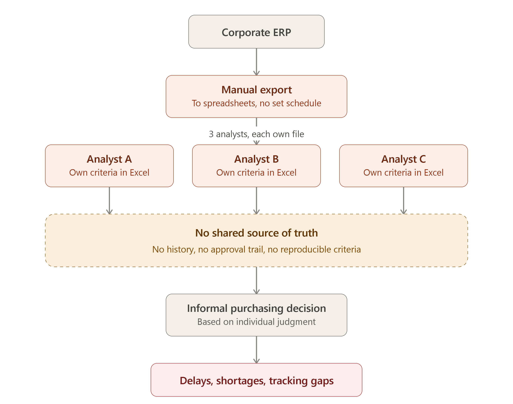
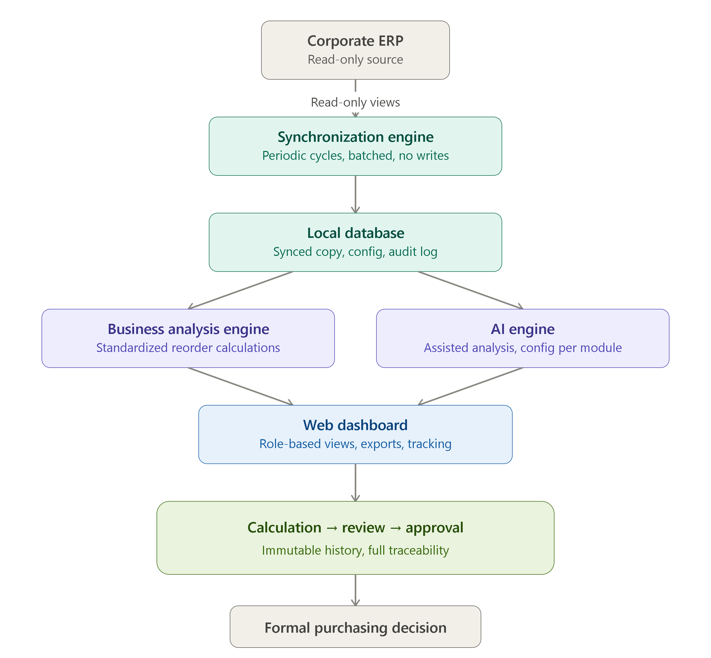

A purpose-built procurement intelligence platform that replaced more than seven years of spreadsheet-based analysis, reducing execution times for critical purchasing processes by up to 99% without replacing the legacy ERP.
The procurement department of a mid-sized precision manufacturing company had operated for more than seven years relying primarily on Excel and Word to manage critical sourcing processes, including reorder calculations, purchase order follow-up, strategic materials analysis, and specialized tooling management.
This created recurring operational problems: late or poorly sized purchases, limited traceability, tooling shortages, delays in export documentation, fragmented information, and purchasing decisions that depended heavily on individual analyst judgment.
A modern ERP replacement had been evaluated for approximately two years, but its licensing and implementation costs were not economically viable. The solution therefore needed to improve the existing operation without replacing or modifying the corporate ERP.
The project started by analyzing the procurement department's operational workflows, recurring problems, business rules, data dependencies, and infrastructure constraints.
Rather than attempting to replace the ERP, the solution was designed as an independent intelligence layer that consumes ERP information in read-only mode and performs analysis against a synchronized local copy.
An incremental delivery strategy was used. Each module was designed, developed, and validated against real production data before expanding the platform to additional processes.
Architecture decisions were evaluated based on business value, operational risk, cost, technical feasibility, maintainability, and the capabilities of the existing infrastructure.
Procurement analysis depended on manual exports from the legacy ERP into spreadsheets. Individual analysts performed calculations independently, with no centralized repository, standardized workflow, or complete audit history.

The new architecture introduced a web-based intranet platform operating as an intelligence layer above the existing ERP. Relevant information is periodically synchronized into a local repository where business rules, analysis engines, workflows, and AI-assisted capabilities operate without impacting the source system.

The resulting platform centralizes procurement analysis, purchase order follow-up, inventory-related calculations, specialized tooling management, approval workflows, reporting, and AI-assisted decision support within a single internal system.
The solution also introduced centralized information, AI-assisted analysis, standardized calculations, improved traceability, and the equivalent of one full 9-hour workday of capacity redirected toward higher-value activities.